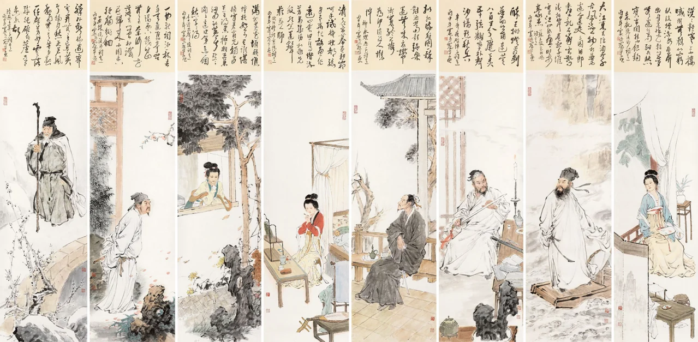

您的位置：首页 > 宋词
宋代盛行的一种中国文学体裁，宋词是一种相对于古体诗的新体诗歌，为宋代儒客文人智慧精华，标志宋代文学的最高成就。宋词始于南朝梁代，形成于唐代而极盛于宋代。宋词句子有长有短，便于歌唱。因是合乐的歌词，故又称曲子词、乐府、乐章、长短句、诗余、琴趣等。宋词是中国古代文学皇冠上光辉夺目的明珠，在古代中国文学的阆苑里，它是一座芬芳绚丽的园圃。它以姹紫嫣红、千姿百态的神韵，与唐诗争奇，与元曲斗艳，历来与唐诗并称双绝，都代表一代文学之盛。
宋词的代表人物主要有苏轼、辛弃疾（豪放派代表词人）、柳永、李清照（婉约派代表词人）等等。宋词作为一种词体，是金词、元词、明词与清词的先导，也影响了金曲与元曲的产生。在古代社会，歌妓的传唱是宋词传播的主要方式，词的歌唱也主要集中在歌楼酒馆、勾栏瓦舍等享乐宴饮的场合。通过商品经济，畅通了宋词的传播渠道，实现了宋词受众的最大化。宋词优美含蓄的语言与生动的情感也使得其成为当代流行歌曲创作的重要源泉。

© 版权所有 someone@263.net